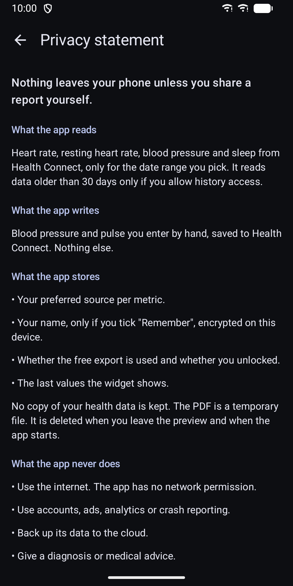

Health Reports: Werte als PDF
Blutdruck, Puls und Schlaf aus Health Connect als PDF-Bericht für den Arzt.





Über die App
Health Reports macht aus den Blutdruck-, Puls- und Schlafdaten in Health Connect ein übersichtliches PDF, das Sie zum Arzttermin mitnehmen können. Wählen Sie einen Zeitraum von 7, 30 oder 90 Tagen oder legen Sie eigene Daten fest. Der Bericht beginnt mit einer Zusammenfassung, danach folgen die Details: - Zusammenfassung: Durchschnitt, niedrigster und höchster Blutdruck und Puls, Verlauf des Ruhepulses, durchschnittliche Schlafdauer und Anzahl der Messungen je Blutdruckkategorie. - Blutdruck: Tabelle aller Messungen mit Uhrzeit, Quell-App und AHA-Kategorie in neutraler Formulierung. - Puls: tägliche Ruhe-, Mindest- und Höchstwerte mit Verlaufsdiagramm. - Schlaf: Tabelle je Nacht mit Gesamtdauer und Schlafphasen sowie eine Übersicht der Phasen. Weitere Funktionen: - Vorschau jeder Seite, bevor Sie den Bericht teilen. - PDF per E-Mail oder Nachricht teilen oder drucken, über das normale Android-Menü zum Teilen und Drucken. - Blutdruckwerte von Hand eintragen, auf Wunsch mit Puls. Sie werden in Health Connect gespeichert. - Doppelte Messungen aus verschiedenen Apps werden zusammengeführt. Für jede Messgröße können Sie eine bevorzugte Quelle wählen. - Auf Wunsch steht Ihr Name im Bericht. Ein Geburtsdatum ist nicht nötig. Der Name wird nur auf Wunsch gespeichert und ist auf Ihrem Handy verschlüsselt. - Ein Widget auf dem Startbildschirm zeigt die letzte Blutdruckmessung und den 7-Tage-Durchschnitt des Ruhepulses. - Helles und dunkles Design folgen dem System. Für Smartphones und Tablets. Datenschutz: Die App hat keine Internetberechtigung, kein Konto und keine Analyse. Sie speichert keine Kopie Ihrer Gesundheitsdaten. Health Connect bleibt der einzige Ort der Daten. Das temporäre PDF wird gelöscht, sobald Sie die Vorschau verlassen. Der Bericht geht nur dorthin, wohin Sie ihn senden. Kauf: Ihr erster Export ist ohne Zahlung möglich. Danach brauchen Sie für weiteres Teilen und Drucken einen einmaligen In-App-Kauf namens Unbegrenzte Berichte. Daten ansehen, Vorschau, Messwerte eintragen und das Widget brauchen keinen Kauf. Den Kauf können Sie in den Einstellungen wiederherstellen. Voraussetzungen: Android 9 oder neuer. Ab Android 14 ist Health Connect enthalten. Auf Android 9 bis 13 installieren Sie die App Health Connect aus Google Play. Außerdem brauchen Sie eine App oder ein Gerät, das Blutdruck, Puls oder Schlaf in Health Connect schreibt, oder Sie tragen Blutdruckwerte von Hand ein. Wichtig: Health Reports zeigt nur aufgezeichnete Werte. Es stellt keine Diagnose und gibt keine medizinischen Ratschläge. Fragen Sie Ihre Ärztin oder Ihren Arzt, was Ihre Werte bedeuten.